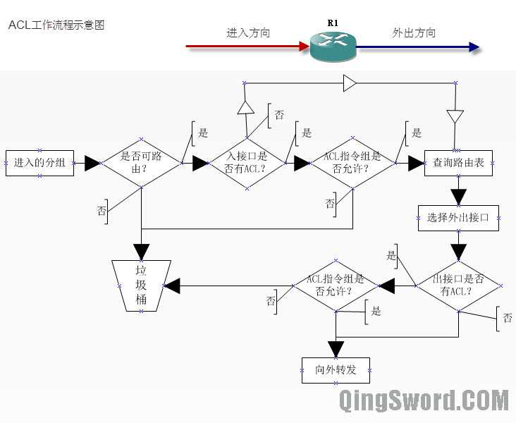
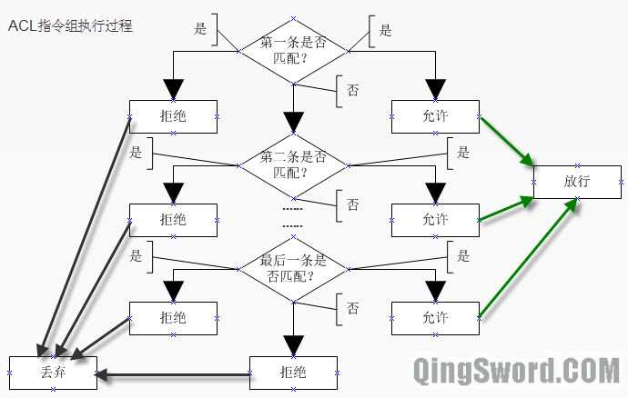
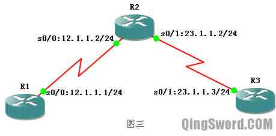
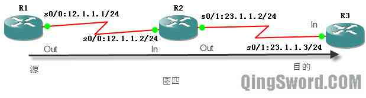
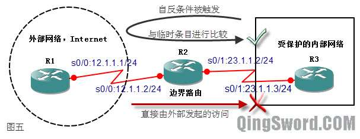
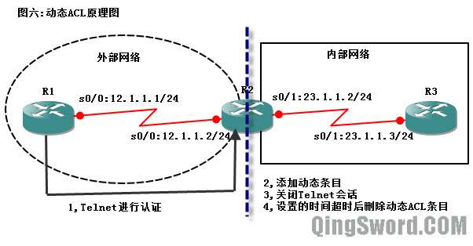
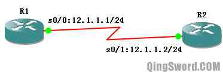

[CCNA图文笔记]-26-访问控制列表(ACL)实例详解
引言
这篇文章介绍访问控制列表的作用；分别介绍标准、扩展、命名访问控制列表的配置和需要注意的问题。文章后半部分会实例演示一些高级访问控制列表的配置，包括动态、反射、和基于时间的访问控制列表（本文中所有配置都可以在GNS3中完成，使用的路由ios为c3640）。
文章目录
- 0×1.ACL概述
- a.ACL的作用
- b.ACL的工作流程
- c.通配符掩码在ACL中的作用
- 0×2.标准ACL配置
- a.如何配置标准ACL
- b.如何编辑标准ACL
- c.标准ACL放置的位置
- d.如何配置标准命名ACL
- 0×3.扩展ACL配置
- a.如何配置扩展ACL
- b.扩展ACL放置的位置
- c.如何编辑扩展ACL
- d.扩展ACL中的established
- e.如何配置扩展命名ACL
- 0×4.配置ACL需要注意的事项
- a.配置扩展ACL允许RIP协议
- b.配置扩展ACL允许EIGRP协议
- c.配置扩展ACL允许OSPF协议
- 0×5.高级ACL配置
- a.如何配置反射ACL
- b.如何配置动态ACL
- c.如何配置基于时间的ACL
0×1.ACL概述
ACL（Access Control List，访问控制列表），是一系列运用到路由器接口的指令列表，路由根据ACL中指定的条件对经过路由器接口的数据包进行检查。本篇文章仅讨论IP的访问控制列表，针对IP协议在路由的每个端口可以创建两个ACL：一个用于过滤进入端口的数据，另外一个用于过滤流出端口的数据。
ACL指令的放置顺序是很重要的，Cisco的IOS软件，按照ACL中指令的顺序依次检查数据包是否满足某一个指令条件，当检测到某个指令满足条件时就执行该指令规定的动作，并且不会再检测后面的指令条件。
a.ACL的作用
ACL的作用大致分为下面这几点：
限制网络流量，提高网络性能。
提供数据流控制。
为网络访问提供基本的安全层。
决定转发或阻止哪些类型的数据流。
b.ACL的工作流程
下图为ACL的工作流程图，当路由器的进入方向的接口收到一个分组的时候，首先检查它是否是可路由的，如果不可路由（比如并非是发往本路由的分组），则直接丢弃。
如果可路由，接下来判断进入方向的接口是否配置了ACL，如果没有配置进入方向的ACL，则直接查询路由表，然后根据路由表中找到的端口准备往外转发；如果配置了进入方向的ACL则检查指令组是否允许该分组通过，不允许则丢弃，允许则查询路由表，选择外出接口准备往外转发，从这里可以看出入站的ACL检查是在查询路由表之前执行的。
外出接口选择好之后，再检查外出接口上有没有配置ACL，如果配置了ACL则检查ACL指令组是否允许，没有配置ACL则直接转发。
在ACL流程图中的"ACL指令组"可能包含多条语句，"ACL指令组"的工作流程图如下：
"ACL指令组"是逐条执行的，在逐条执行的过程中，只要发现有一条匹配，则使用那一条规定动作确定允许或拒绝（比如执行第一条的时候就匹配了，那么就使用第一条规定的动作允许或拒绝，后面的语句就不会被执行了），如果所有指令都不匹配，默认的动作是拒绝。
c.通配符掩码在ACL中的作用
路由器使用通配符掩码(Wildcard Masking)与源或目标地址一起来分辨匹配的地址范围，在访问控制列表中，将通配符掩码中的位设置成1表示忽略IP地址中对应的位，设置成0表示必须精确匹配IP地址中对应的位，下面举几个浅显易懂的例子：
192.168.1.0 0.0.0.255
这个例子中，通配符掩码是0.0.0.255，前面24位是0，最后8位是1，也就是前面24位必须精确匹配，最后8位是什么都没关系。将这个通配符和前面的IP地址192.168.1.0结合起来意思就是,匹配从192.168.1.0到192.168.1.255的所有IP地址（这和OSPF或EIGRP中的反掩码是一个道理）。
192.168.0.0 0.0.255.255
匹配的IP地址范围是192.168.0.0-192.168.255.255。
192.168.16.0 0.0.7.255
这个例子中，通配符掩码的第三个数是7，IP地址的第三位是16，对他们进行分解转化成二进制；
7 = 00000 111
16 = 00010 000
前面说过，通配符掩码中0的部分必须精确匹配，1的部分什么都可以，也就是说16的二进制表示法前面的5位（00010）必须精确匹配，最后3位的取值范围可以是(000-111)，那么就是；
00010 000-00010 111,转化成十进制就是16-23。
所以这条规则匹配的IP地址范围是"192.168.16.0-192.168.23.255"。
192.168.1.0 0.0.0.254
匹配192.168.1.0中所有偶数IP地址。
192.168.1.1 0.0.0.254
匹配192.168.1.0中所有奇数IP地址。
上面这些例子说明了怎么通过规则中的通配符掩码确定匹配的IP地址范围，如果一个数据包中包含了源IP地址"192.168.0.2"到达路由器，假设路由器上的访问控制列表语句中包含"192.168.0.0 0.0.0.255"，路由器按照下面的步骤匹配这个IP地址：
1）使用访问控制列表中的地址对"192.168.0.0 0.0.0.255"执行逻辑或操作（192.168.0.0和0.0.0.255执行逻辑或运算），得到结果192.168.0.255。
2）用地址对中的通配符掩码（0.0.0.255）和数据包头中的IP（192.168.0.2）执行逻辑或操作，结果为192.168.0.255。
3）将得到的两个结果相减，如果结果是0则匹配，如果结果非0,则说明不匹配。对接下来的ACL条目都重复以上三步相同的操作。
在IP访问控制列表地址掩码对中，有两个关键词可以用来省略一些输出：
"any"：它可以用来代替地址掩码对"0.0.0.0 255.255.255.255"，该地址掩码对匹配任何IP地址。
"host"：它可以用来代替通配符掩码"0.0.0.0"，该通配符掩码只能匹配一个IP地址。比如"host 192.168.1.1"等同于地址对"192.168.1.1 0.0.0.0"。在标准的访问控制列表中，如果仅匹配一个IP地址，可以省略关键字host，也就是说在标准访问控制列表条目中，没有通配符掩码，说明掩码是"0.0.0.0"；而在扩展的访问控制列表中不能省略host关键字。
0×2.标准ACL配置
这一部分的实验全部在GNS3中完成，使用的路由ios为c3640。
a.如何配置标准ACL
首先配置下面的拓扑（图3），保证全网可以互通：
R1配置：
R1(config)#int s 0/0 R1(config-if)#ip add 12.1.1.1 255.255.255.0 R1(config-if)#no shut R1(config)#ip route 0.0.0.0 0.0.0.0 12.1.1.2 R1(config)#end
R2配置：
R2(config-if)#int s 0/1 R2(config-if)#ip add 23.1.1.2 255.255.255.0 R2(config-if)#no shut R2(config-if)#int s 0/0 R2(config-if)#ip add 12.1.1.2 255.255.255.0 R2(config-if)#no shut R2(config-if)#end
R3配置：
R3(config)#int s 0/1 R3(config-if)#ip add 23.1.1.3 255.255.255.0 R3(config-if)#no shut R3(config-if)#exit R3(config)#ip route 0.0.0.0 0.0.0.0 23.1.1.2 R3(config)#end
完成基本连通性的配置后，下面来创建和应用标准的访问控制列表。
访问控制列表是在路由器的全局配置模式输入的，增加一条标准的访问控制列表语法格式如下：
Router(config)#access-list {ACL的编号} {deny|permint} {source [source-wildcard]|any} [log]
/*
* 其中大括号里面的类容表示必选，中括号里面的类容表示可选，
*
* {ACL的编号}:
* 标准ACL的编号范围是1-99之间的整数，
* 扩展ACL的编号是100-199之间的整数。
*
* {deny|permint}:
* 指定匹配这条规则的数据是允许（permint）还是拒绝（deny），
*
* {source [source-wildcard]|any} :
* 指定了一个IP地址范围，使用地址对的形式，比如,
* "192.168.1.0 0.0.0.255","host 192.168.1.1"或者"any"。
* 这个参数在前面的"通配符掩码在ACL中的作用"中详细介绍过。
*
* [log]:可选参数，表示要不要将匹配的条目显示在控制台输出中，
* 或者输出到特定的服务器。
*/
在R3上创建一条标准ACL，禁止IP（12.1.1.1）的访问：
R3配置：
/* * 创建标准的ACL，编号是1，第一个条目是阻止12.1.1.1， * 第二个条目是允许任何IP地址的访问， * 两个条目的顺序很重要，不能颠倒，如果将允许任何IP地址放在第一条， * 那么由于每个IP地址都能匹配第一条，所以第二条将永远不会被执行到。 * 这个ACL的第一条还可以简写成"access-list 1 deny 12.1.1.1", * 这是标准ACL的简写规则，在扩展ACL中不能省略关键字host。 */ R3(config)#access-list 1 deny host 12.1.1.1 R3(config)#access-list 1 permit any /* * 将编号是1的标准ACL应用到路由器的s0/1接口上， * 方向是in，即进入的方向。 */ R3(config)#int s 0/1 R3(config-if)#ip access-group 1 in R3(config-if)#end /*在R1上ping R3测试*/ R1#ping 23.1.1.3 U.U.U /*ping不通了*/
这条标准的ACL仅仅是禁止了一个IP地址12.1.1.1，如果R1上面还有其他接口，使用高级ping命令让其他接口的IP地址作为源，去ping R3的s0/1接口IP，还是可以ping通的。
下面看一下如何编辑这个创建好了的标准ACL。
b.如何编辑标准ACL
完成上面的配置后，可以在R3上使用下面的命令来查看ACL条目：
/* * "Standard IP access list 1" ACL类型和编号， * 每一行是一个条目,其中"10"是行号， * 后面是执行的操作，（22 matches）表示匹配的次数。 */ R3#show access-lists Standard IP access list 1 10 deny 12.1.1.1 (22 matches) 20 permit any (15 matches)
可以使用下面的命令来删除标准ACL中对应的条目：
/*首先进入标准ACL 1的编辑模式*/ R3(config)#ip access-list standard 1 R3(config-std-nacl)#no 10 /*删除行号是10的这一行*/ R3(config-std-nacl)#end /*再次查看，发现只剩下行号是20的了*/ R3#show access-lists Standard IP access list 1 20 permit any (30 matches)
注意，这种删除方法只能适用于Cisco的IOS 12.0之后的版本（包括12.0），有个简单的判断方法，如果使用"show access-lists"看不到每个条目前面的行号，就说明当前路由器的IOS版本不支持这种方法，也同样不支持接下来要介绍到的"标准命名ACL"。
标准ACL配置完成后，如果不需要了可以用下面的方法来删除ACL：
/*删除编号是1的标准ACL*/ R3(config)#no access-list 1 /*删除在接口上的调用*/ R3(config)#int s 0/1 R3(config-if)#no ip access-group 1 in R3(config-if)#end
c.标准ACL放置的位置
标准的ACL只能对源地址进行控制，如下图（图4）所示，将R1的s0/0接口作为源地址，R3的s0/1作为目的地址，数据一共要经过四个接口。
如果将前面创建的ACL 1配置在R1的s0/0上，方向是Out，结果将不起作用，因为ACL仅对穿越流量起作用，对本路由器起源的流量不起作用。
如果将前面创建的ACL 1配置在R2的s0/0上，方向是In，结果起作用，R1不能访问R3了，但同时R1也不能访问R2了，因为标准ACL只针对源地址进行过滤。
如果将前面创建的ACL 1配置在R2的s0/1上,方向是Out，结果正确，R1能正常访问R2，但是不能访问R3。
如果将前面创建的ACL 1配置在R3的s0/1上,方向是In，结果同样正确。
经过上面四步的分析，可以得出这样的结论，标准访问控制列表要尽可能的应用在靠近目标端，因为标准ACL只针对源地址进行过滤。
b.如何配置标准命名ACL
可以使用字符来代替数字标识ACL，称为命名ACL，命名ACL与Cisco IOS 11.2以前的版本不兼容，现在一般都是12.0以后的版本。另外，不能为多个ACL使用相同的名字，不能使用相同的名字来命名不同类型的ACL，比如，不能使用相同的名字来命名一个标准ACL和一个扩展ACL。
下面使用标准命名ACL来实现拒绝R1访问R3：
/*"deny-r1"就是这条标准ACL的自定义名称*/ R3(config)#ip access-list standard deny-r1 R3(config-std-nacl)#deny 12.1.1.1 /*第一条规则，阻止12.1.1.1*/ R3(config-std-nacl)#permit any /*第二条规则允许所有IP*/ R3(config-std-nacl)#exit R3(config)#int s 0/1 /*在R3的s0/1接口上调用它*/ R3(config-if)#ip access-group deny-r1 in R3(config-if)#end /*查看ACL*/ R3#show access-lists Standard IP access list deny-r1 10 deny 12.1.1.1 20 permit any
标准命名的ACL也可以使用标准ACL里面的编辑语句来编辑它：
/*删除编号是20的条目*/ R3(config)#ip access-list standard deny-r1 R3(config-std-nacl)#no 20 R3(config-std-nacl)#end /*再次查看，发现只剩下一条ACL条目了*/ R3#show access-lists Standard IP access list deny-r1 10 deny 12.1.1.1 /*可以使用下面的方法删除这个标准命名ACL，并在接口上删除对它的调用*/ R3#conf t R3(config)#no ip access-list standard deny-r1 R3(config)#int s 0/1 R3(config-if)#no ip access-group deny-r1 in R3(config-if)#end
0×3.扩展ACL配置
a.如何配置扩展ACL
配置扩展ACL也分为两个步骤——创建ACL和在接口下调用；扩展ACL的结尾也是隐式的拒绝所有。下面是创建扩展ACL的基本格式：
Router(config)#access-list access-list-number {deny|permit|remark} protocol source source-wildcard [operator operand] [port port-name or name] destination destination-wildcard [operator operand] [port port-name or name] [established]
/*
* "access-list-number"是扩展ACL编号，范围从100-199。
*
* {deny|permit|remark} 是这条ACL条目执行的操作，拒绝|允许|注释，
* 其中的"remark"是添加注释，相当于程序设计中的注释语句。
*
* "protocol"代表协议，可以用具体的协议名称代替，比如TCP、UDP、ICMP、IP等。
*
* "source source-wildcard",表示源地址以及通配符掩码。
*
* "destination destination-wildcard",表示目的地址以及通配符掩码。
*
* "[port port-name or name]"表示端口号或名称，输入telnet和23的效果是一样的。
*
* "[established]"在后面的"扩展ACL中的established"中介绍。
*/
下面举个例子，还是使用上面的图三作为拓扑图，配置扩展ACL拒绝R1去往R3的Telnet通信。
在R2上配置扩展ACL然后调用它：
/* * 扩展ACL号为100，第一条命令拒绝tcp类型的连接， * 源主机是12.1.1.1，没有配置源端口，默认就匹配所有端口， * 目的主机是23.1.1.3，目的端口是23，即telnet。 */ R2(config)#access-list 100 deny tcp host 12.1.1.1 host 23.1.1.3 eq telnet /*第二条命令允许所有IP通信，源和目的是任意主机。*/ R2(config)#access-list 100 permit ip any any /*在R2的s0/0接口上调用它*/ R2(config)#int s 0/0 R2(config-if)#ip access-group 100 in R2(config-if)#end
在R3上配置VTY：
/*"www.qingsword.com"被配置成特权密码与vty登陆密码*/ R3(config)#enable secret www.qingsword.com R3(config)#line vty 0 4 R3(config-line)#password www.qingsword.com R3(config-line)#login R3(config-line)#end
测试在R1上telnet R3：
R1#telnet 23.1.1.3 Trying 23.1.1.3 ... % Destination unreachable; gateway or host down /*发现无法连接上，说明ACL起作用了*/
这里需要注意，因为这个实验是在前面的标准ACL实验的基础上进行的，请确保静态路由配置无误，全网能够互相通信。如果之前没有删除标准ACL请先删除它，之后再进行扩展ACL的实验。
那么为什么要将扩展ACL配置在R2上呢？下面这一部分将介绍扩展ACL推荐放置的位置。
b.扩展ACL放置的位置
利用上面的图4来进行说明，R1的12.1.1.1是源地址，R3的23.1.1.3是目的地址：
如果将扩展ACL 100放在R1的s0/0接口上，方向是Out，结果将不起作用，前面介绍过，ACL只对穿越流量起作用，对本地起源的流量不起作用。
如果将扩展ACL 100放在R2的s0/0接口上，方向是In，结果正确，并无其他影响。
如果将扩展ACL 100放在R2的s0/1接口上，方向是Out，结果正确，并无其他影响。
如果将扩展ACL 100放在R3的s0/1接口上，方向是In，结果正确，并无其他影响。
经过上面四步的分析，因为扩展ACL是可以根据源和目的地址以及端口进行过滤，放在R2和R3的任何接口上都不会影响其他数据流量。但有以下两点需要注意：
放在R2的s0/1接口，方向是Out，根据前面的"ACL工作流程示意图"可以知道，路由器会先处理这个数据，并且查询路由表准备转发，转发的时候发现在转发端口上面调用的扩展ACL 100中，有一个条目匹配，并且动作是阻止，这个数据在这个时候被丢弃，这就浪费了R2的CPU资源（需要查询路由表）。
放在R3的s0/1接口，方向是In，不但会因为一个最终会被丢弃的数据浪费R2和R3的CPU资源，还会造成带宽资源的浪费。
从上面的分析得出结论，扩展ACL应该尽可能的放在靠近源端，这样可以使得一些非法的数据流尽早的被丢弃。所以在上面的实例中，扩展ACL 100被放置在R2的s0/0接口上，方向是In，这是最靠近源的端口。
c.如何编辑扩展ACL
这一部分的命令适用于扩展ACL以及扩展命名ACL，下面介绍如何查看、添加、删除、更改扩展ACL：
在R2的ACL 100中，只是阻止了R1对R3的telnet访问，R1此时是可以ping通R3的，可以使用下面的命令禁止R1 ping R3的23.1.1.3：
/*首先查看R2上面的扩展ACL*/ R2#show access-lists Extended IP access list 100 10 deny tcp host 12.1.1.1 host 23.1.1.3 eq telnet (3 matches) 20 permit ip any any /*在R1上测试Ping*/ R1#ping 23.1.1.3 !!!!! /*可以ping通*/ /* * 在R2上添加ACL条目到ACL 100，让R1无法ping通R3， * 进入ACL 100编辑模式。 */ R2(config)#ip access-list extended 100 /* * 添加一条新的规则，阻止ICMP协议， * 源地址是12.1.1.1，目的地址是23.1.1.3。 */ R2(config-ext-nacl)#deny icmp host 12.1.1.1 host 23.1.1.3 R2(config-ext-nacl)#end /* * 查看ACL 100，发现了一个问题， * 新添加的ACL条目被增加到了ACL的末尾， * 而在此之前有一条"permit ip any any", * 这样，新增加的那个条目永远也别想执行到， * 这个时候在R1上ping R3的23.1.1.3任然能够Ping通。 */ R2#show access-list Extended IP access list 100 10 deny tcp host 12.1.1.1 host 23.1.1.3 eq telnet (3 matches) 20 permit ip any any (5 matches) 30 deny icmp host 12.1.1.1 host 23.1.1.3 /*先用下面的命令删除最新添加的ACL条目*/ R2(config)#ip access-list extended 100 R2(config-ext-nacl)#no 30 /* * 然后用这条命令在中间插入一条ACL条目， * 前面的数字15是条目编号，可以是10-20之间的任何整数， * 这样这条条目就会被自动插入到ACL100的10到20之间。 */ R2(config-ext-nacl)#15 deny icmp host 12.1.1.1 host 23.1.1.3 R2(config-ext-nacl)#end /*查看一下，发现果然插入到了10-20之间,这样R1就Ping不了R3了。*/ R2#show access-lists Extended IP access list 100 10 deny tcp host 12.1.1.1 host 23.1.1.3 eq telnet (3 matches) 15 deny icmp host 12.1.1.1 host 23.1.1.3 20 permit ip any any (5 matches) /*从这个例子可以看出，ACL编号设计从10开始增量是10，是有其道理的，这为我们留下了足够的空间去插入新的ACL条目*/
如果大家觉得ACL条目前面的编号从10开始不怎么习惯，可以使用下面的命令自己调整起始编号和编号的递增方式：
/* * 100是ACL的编号，也可以是一个命名扩展ACL的字符串名称， * 1代表起始的数字，5代表增量（每个条目编号增加5）。 */ R2(config)#ip access-list resequence 100 1 5 R2(config)#end /*查看ACL，条目编号就变成1、6、11了*/ R2#show access-lists Extended IP access list 100 1 deny tcp host 12.1.1.1 host 23.1.1.3 eq telnet (3 matches) 6 deny icmp host 12.1.1.1 host 23.1.1.3 11 permit ip any any (5 matches)
d.扩展ACL中的established
在扩展ACL中有一个可选参数"established"，可以用作TCP的单向访问控制。这种设计基于TCP的三次握手，在TCP会话中初始的数据包只有Sequence（序列号）而没有ACK（确认号），如果受保护的网络主动发起对外部网络的TCP访问，外部返回的数据将携带TCP ACK参数，这样的数据将被允许，而外部主动发起的对内部受保护网络的访问则不会被允许，因为只有序列号没有确认号。
下面还是使用本文上面的拓扑图图3来完成这一实验演示，首先配置各路由的IP以及静态路由，让全网都可以互通，这一步这里就不重复了，实验的目的是在R1和R3上面都配置VTY，只允许R3对R1的telnet访问，不允许R1对R3的telnet访问；
R1、R3配置VTY：
/*R1上面配置VTY*/ R1(config)#enable secret www.qingsword.com R1(config)#line vty 0 4 R1(config-line)#pass www.qingsword.com R1(config-line)#login R1(config-line)#end /*R3上面配置VTY*/ R3(config)#enable secret www.qingsword.com R3(config)#line vty 0 4 R3(config-line)#pass www.qingsword.com R3(config-line)#login R3(config-line)#end
R2上面配置ACL：
/* * 末尾添加established参数， * 注意，因为是允许R3访问R1的telnet， * 源和目的地址以及端口别搞错了， * 这个访问列表是当R3的telnet发到R1，R1回复的TCP中携带ACK号才匹配的， * 所以源应该是R1，源端口应该是R1的telnet端口23， * 目的端口是R3上的一个随机端口，没有写出来就是匹配所有端口。 */ R2(config)#access-list 100 permit tcp host 12.1.1.1 eq telnet host 23.1.1.3 established R2(config)#int s 0/1 /*在接口上调用，注意方向是Out*/ R2(config-if)#ip access-group 100 out R2(config-if)#end /*有些朋友可能觉得这个acl配置在R2的s0/0接口，方向是in，效果也是一样的，但如果那样配置，R1不仅仅不能访问R3，就连R2也不能访问了*/
下面测试R1 telnet R3和R3 telnet R1：
R1#telnet 23.1.1.3 Trying 23.1.1.3 ... % Destination unreachable; gateway or host down /* * 发现连接不上，根据前面的分析可以知道， * 因为R1始发的TCP连接只有序列号，在经过R2的s0/1接口准备往外发送的时候， * 被ACL拦截了下来。 */ /*可以看到拦截记录*/ R2#show access-lists Extended IP access list 100 10 permit tcp host 12.1.1.1 eq telnet host 23.1.1.3 established (25 matches) /*R3 telnet R1没有任何问题*/ R3#telnet 12.1.1.1 Trying 12.1.1.1 ... Open
此时不论是R1 ping R3还是R3 ping R1结果都是Ping不通的，因为ACL 100中没有匹配ICMP的条目，最后默认的操作是拒绝所有没有条目匹配的数据，可以使用下面的命令添加一条条目允许R3 ping R1，R1不能Ping R3：
/*进入ACL 100的编辑模式*/ R2(config)#ip access-list extended 100 /*添加一条命令允许R1对R3的ICMP的应答包*/ R2(config-ext-nacl)#permit icmp host 12.1.1.1 host 23.1.1.3 echo-reply R2(config-ext-nacl)#end /*查看一下*/ R2#show access-lists Extended IP access list 100 10 permit tcp host 12.1.1.1 eq telnet host 23.1.1.3 established (25 matches) 20 permit icmp host 12.1.1.1 host 23.1.1.3 echo-reply R2# /*测试ping*/ R3#ping 12.1.1.1 !!!!! /*R3 ping R1成功了*/ R1#ping 23.1.1.3 U.U.U /*R1 ping不通R3*/
在实际应用中很少使用这一参数，因为established只能用于基于TCP的应用，对于UDP、ICMP等协议不起作用，稍后的高级ACL配置中"如何配置反射ACL"将会介绍一种高级版本用来解决这一缺陷。
e.如何配置扩展命名ACL
配置扩展命名ACL和标准命名ACL使用的方法类似，下面就简单的使用扩展命名ACL来实现上面"established"中的配置：
/*首先删除之前配置好的ACL 100*/ R2(config)#no access-list 100 R2(config)#int s 0/1 R2(config-if)#no ip access-group 100 out R2(config-if)#exit /*配置扩展命名ACL，名称为tcp-firewall*/ R2(config)#ip access-list extended tcp-firewall R2(config-ext-nacl)#permit tcp host 12.1.1.1 eq 23 host 23.1.1.3 established R2(config-ext-nacl)#permit icmp host 12.1.1.1 host 23.1.1.3 echo-reply R2(config-ext-nacl)#exit /*在接口上调用*/ R2(config)#int s 0/1 R2(config-if)#ip access-group tcp-firewall out R2(config-if)#end /*查看*/ R2#show access-lists Extended IP access list tcp-firewall 10 permit tcp host 12.1.1.1 eq telnet host 23.1.1.3 established 20 permit icmp host 12.1.1.1 host 23.1.1.3 echo-reply
0×4.配置ACL需要注意的事项
下面是应用访问控制列表需要注意的一些事情：
访问控制列表只对穿越流量起作用。
标准列表应该尽可能应用在靠近目标端。
扩展访问列表应该尽可能应用在靠近源端。
ACL条目的放置顺序很重要，如果两条语句放置的前后都不影响结果，一般将较多使用的那条放在前面，这样可以减少路由器的查找时间。
IP访问控制列表中最后隐含为拒绝所有，没有匹配任何语句的流量将被拒绝。
同一个访问控制列表可以应用在同一个路由的不同接口上；对于每个协议的每个接口的每个方向，只能提供一个访问控制列表。
没有携带条目号对ACL的编辑，比如添加操作，条目默认是被添加在ACL的最后面。
a.配置扩展ACL允许RIP协议
配置ACL时往往容易忽略路由协议，如果一个网络中运行的是RIPv1协议，在路由器上使用了ACL，ACL条目中没有能够匹配RIP数据流的条目，默认的操作是拒绝，这样就会影响RIP协议的正常工作，可以在ACL的第一条添加下面的语句，允许RIPv1协议的数据流通过：
Router(config)#access-list 100 permit udp any host 255.255.255.255 eq rip
如果一个网络中运行的是RIPv2协议，则可以使用下面这条语句允许RIPv2的流量：
Router(config)#access-list 100 permit udp any host 224.0.0.9 eq rip
b.配置扩展ACL允许EIGRP协议
如果一个网络中运行的是EIGRP协议，可以使用下面这条语句允许EIGRP的流量：
Router(config)#access-list 100 permit eigrp any any
c.配置扩展ACL允许OSPF协议
如果一个网络中运行的是OSPF协议，可以使用下面这条语句允许OSPF的流量：
Router(config)#access-list 100 permit ospf any any
0×5.高级ACL配置
a.如何配置反射ACL
注意：Cisco IOS只支持使用扩展的命名访问控制列表来定义反射列表。
前面介绍的ACL参数中携带established能够起到单向访问控制的目的，但是这种使用方法只能针对TCP的流量，而反射ACL能够提供真正意义上的单向访问控制，下图（图5）描述了反射ACL的工作方式：
上图的上半部分，当内部发起一个会话（基于IP、ICMP、TCP、UDP都可以），并将数据发给外部网络时，反射ACL被触发并且生成一个新的临时条目，如果从外部返回的数据符合临时条目，则允许进入内部网络。
如果是一个始发于外部的会话，在边界路由上不会有临时条目的记录，边界路由上的反射ACL将阻止这样的流量进入内部网络。
临时条目的生成依据的原则：协议(protocol)保持不变，Source-IP和Destination-IP严格对调，Source-Port和Destination-Port严格对调；对于ICMP协议，会根据协议类型号进行匹配。
下面就来实际的配置一下反射ACL（使用上面的图5），让R3可以远程telnet R1，R1不能telnet R3：
步骤1，路由器各接口IP如图5所示，在R1和R3上面配置静态路由，让全网互通，这些配置就不贴出来了，请自己完成；
步骤2，在R1和R3上分别配置远程登录VTY；
R1(config)#enable secret www.qingsword.com R1(config)#line vty 0 4 R1(config-line)#password www.qingsword.com R1(config-line)#login R1(config-line)#end R3(config)#enable secret www.qingsword.com R3(config)#line vty 0 4 R3(config-line)#pass www.qingsword.com R3(config-line)#login R3(config-line)#end
步骤3，在R2上创建反射ACL；
/* * 创建扩展命名ACL，这个ACL将在R2的s0/0接口的出方向上调用， * "permit ip any any reflect out-ip",这个条目的意思是， * 允许所有IP流量，并对外出的IP流量进行反射， * 反射生成的临时ACL被保存到out-ip列表中。 */ R2(config)#ip access-list extended out-acl R2(config-ext-nacl)#permit ip any any reflect out-ip R2(config-ext-nacl)#exit /* * 创建另外一个扩展命名ACL，这个ACL的作用是对进入的流量做评估， * "evaluate out-ip"当有流量进入的时候，使用这个临时的ACL评估。 */ R2(config)#ip access-list extended in-acl R2(config-ext-nacl)#evaluate out-ip R2(config-ext-nacl)#exit R2(config)#int s 0/0 /* * 在R2的s0/0接口的外出方向调用out-acl， * 这个ACL会根据每个从R3途径R2外出到R1的流量做反射， * 生成一个临时的ACL out-ip。 */ R2(config-if)#ip access-group out-acl out /*在R2的s0/0接口进入方向做评估*/ R2(config-if)#ip access-group in-acl in R2(config-if)#end /*注意，这里说的进入方向、外出方向是相对的。从R1访问R3，那么R2的s0/0就是进入方向；从R3访问R1，R2的s0/0接口对于R3来说就是外出方向。*/
配置完成后，分别在R1和R3上telnet对方进行测试：
/*发现R1不能telnet R3了*/ R1#telnet 23.1.1.3 Trying 23.1.1.3 ... % Destination unreachable; gateway or host down /*首先查看一下R2的ACL*/ R2#show access-lists Extended IP access list in-acl 10 evaluate out-ip Extended IP access list out-acl 10 permit ip any any reflect out-ip Reflexive IP access list out-ip /*在R3上面telnet R1*/ R3#telnet 12.1.1.1 Trying 12.1.1.1 ... Open User Access Verification Password: www.qingsword.com R1>en Password: www.qingsword.com R1# /*成功*/ /*再次查看R2的ACL*/ R2#show access-lists Extended IP access list in-acl 10 evaluate out-ip Extended IP access list out-acl 10 permit ip any any reflect out-ip (50 matches) /*这个条目就是反射ACL自动生成的*/ Reflexive IP access list out-ip permit tcp host 12.1.1.1 eq telnet host 23.1.1.3 eq 52116 (86 matches) (time left 269)
临时的反射条目是有生存时间的，对于TCP会话，如果路由器检测到两组FIN标记，则会在5秒内删除这个临时条目（比如R3登录R1后使用exit退出登录，R2就会在5秒钟以内删除这个临时条目）；如果路由器检测到RST位的分组，则会立即删除临时条目；对于UDP和其他协议（比如ICMP等），默认的删除时间是倒计时300秒。
可以使用下面的命令来更改反射ACL中临时ACL条目的默认生存时间：
/*将默认生存时间改成30秒*/ R2(config)#ip reflexive-list timeout 30
对于这个生存时间的测试，大家可以在R3上面Ping一下R1的12.1.1.1，然后在R2上查看ACL条目信息，就可以看到临时ICMP条目的末尾有一个(time left 26)，time left后面的数字是从刚才更改的30秒开始倒计时的。
b.如何配置动态ACL
结合下图（图6）来解释什么是动态ACL，当Internet上的用户需要访问内网的服务器时，外网用户需要先向边界路由发起一个telnet会话，并且提供有效的用户名和密码，边界路由验证成功后，将会临时添加一条ACL语句到动态ACL中，然后关闭Telnet会话。动态添加的条目对被验证用户进行授权，当条目超时后删除这条临时添加的动态条目。
配置动态ACL前有下面两点需要了解：
1）临时条目的生存周期
动态ACL的生存周期有两个参数：空闲时间和绝对时间，当验证通过后，动态ACL临时条目生成后，空闲时间和绝对时间倒计时同时启动，空闲计时器在每当有一个报文匹配动态访问列表时进行复位（即重新开始倒计时），当空闲计时器到期时，该临时条目被删除。绝对计时器永不复位，当绝对定时器到期时，该动态条目被删除。
2）Telnet的设置
配置了动态ACL后，R2上所有的Telnet请求都会被路由器认为是要开启一个动态ACL条目，当用户验证后，telnet就会被关闭，这样会带来一个问题，网络管理员将不能通过Telnet对路由进行管理，解决的方法是使用rotary命令开启其他Telnet端口,如"rotary 1"命令开启的端口是3001，"rotary 2"开启3002以此类推。
下面就结合图6来讲解如何配置动态ACL；
这里我们希望实现，让R1（Internet上的用户）访问R3（内网）前，先需要在R2上进行验证，最后达到的效果是，验证前R1不能Telnet R3，验证通过后R1能够telnet R3。
第一步：配置R1、R2、R3各接口IP，配置静态路由让全网能够互相通信，在R1和R3上面配置VTY,这一步很简单就不贴出配置信息了，请大家自己完成。
第二步：在R2上配置动态ACL
/*允许外网Telnet本路由进行验证*/ R2(config)#access-list 100 permit tcp any host 12.1.1.2 eq 23 /* * 允许使用3001端口对本路由进行管理， * 稍后会用"rotary 1"命令打开这一端口， * 在实际应用中很少使用Telnet去对路由进行远程管理， * 如果使用其他网络协议，在这里需要打开对应端口。 */ R2(config)#access-list 100 permit tcp any host 12.1.1.2 eq 3001 /* * 创建动态ACL，名称为"ccna_dyanmic_acl", * timeout 60 是绝对时间，60分钟。 * * "permit tcp any host 23.1.1.3 eq 23" * 后半部分中的"any"会被通过验证的主机的IP地址所代替。 */ R2(config)#access-list 100 dynamic ccna_dyanmic_acl timeout 60 permit tcp any host 23.1.1.3 eq 23 /*在本地创建验证用的用户名www.qingsword.com和密码www.qingsword.com*/ R2(config)#user www.qingsword.com pass www.qingsword.com /*用来验证的VTY线路0、1、2、3*/ R2(config)#line vty 0 3 R2(config-line)#login local /*使用本地用户名和密码验证*/ /* * 这条命令中的host会被验证通过的主机的IP代替， * 这个IP会被传递到上面的动态临时ACL中，去替换any关键字， * timeout 3,是空闲时间，这里设置成3分钟。 */ R2(config-line)#autocommand access-enable host timeout 3 /* * 另外创建一条VTY线路4，也使用本地用户名和密码验证， * 这条线路用来远程管理路由器，使用的端口是3001。 */ R2(config-line)#line vty 4 R2(config-line)#login local R2(config-line)#rotary 1 /*在路由的端口上调用这个ACL*/ R2(config-line)#int s 0/0 R2(config-if)#ip access-group 100 in R2(config-if)#end R2#
配置完成后进行下面的测试来验证动态ACL配置的正确性：
/*在没有登录R2验证前，telnet不了R3*/ R1#telnet 23.1.1.3 Trying 23.1.1.3 ... % Destination unreachable; gateway or host down /*登录R2进行验证*/ R1#telnet 12.1.1.2 Trying 12.1.1.2 ... Open User Access Verification Username: www.qingsword.com /*用户名和密码都是www.qingsword.com*/ Password: www.qingsword.com [Connection to 12.1.1.2 closed by foreign host] R1# /*验证成功，然后R2主动断开连接*/ /*在R2上查看ACL条目*/ R2#show access-lists Extended IP access list 100 10 permit tcp any host 12.1.1.2 eq telnet (66 matches) 20 permit tcp any host 12.1.1.2 eq 3001 30 Dynamic ccna_dyanmic_acl permit tcp any host 23.1.1.3 eq telnet /*在动态临时条目下面多出一条，any关键字被验证通过的R1的s0/0接口IP替代。*/ permit tcp host 12.1.1.1 host 23.1.1.3 eq telnet /*这时在R1再次telnet R3*/ R1#telnet 23.1.1.3 Trying 23.1.1.3 ... Open User Access Verification Password: /*连接上了，没有任何问题*/ /*再次查看R2的ACL*/ R2#show access-lists Extended IP access list 100 10 permit tcp any host 12.1.1.2 eq telnet (66 matches) 20 permit tcp any host 12.1.1.2 eq 3001 30 Dynamic ccna_dyanmic_acl permit tcp any host 23.1.1.3 eq telnet /* * 如果没有任何符合这个动态临时条目的流量， * (time left 107)这个条目将在107秒后被删除， * 这个显示是空闲时间倒计时。 */ permit tcp host 12.1.1.1 host 23.1.1.3 eq telnet (39 matches) (time left 107) /*最后测试3001端口对R2的远程管理*/ R1#telnet 12.1.1.2 3001 Trying 12.1.1.2, 3001 ... Open User Access Verification Username: ccna Password: R2> /*登录R2成功，没有和验证的时候一样断开连接。*/
c.如何配置基于时间的ACL
使用基于时间的ACL配置下面的拓扑，让R1只有在每周周一到周五上午7点到8点，下午1点到2点可以Telnet R2：
R1配置：
R1(config)#int s 0/0 R1(config-if)#ip add 12.1.1.1 255.255.255.0 R1(config-if)#no shut
R2配置：
R2(config)#int s 0/1 R2(config-if)#ip add 12.1.1.2 255.255.255.0 R2(config-if)#no shut R2(config-if)#exit /*配置时区，我们是在东八区。*/ R2(config)#clock timezone GMT +8 R2(config)#end /*设置成当前时间*/ R2#clock set 22:33:00 25 november 2012 R2#conf t /*创建时间范围，working是自定义的名称*/ R2(config)#time-range working R2(config-time-range)#? /*查看帮助*/ Time range configuration commands: absolute absolute time and date default Set a command to its defaults exit Exit from time-range configuration mode no Negate a command or set its defaults periodic periodic time and date /*使用周期性的时间范围，关键字weekdays代表周一到周五*/ R2(config-time-range)#periodic weekdays 7:00 to 8:00 R2(config-time-range)#periodic weekdays 13:00 to 14:00 R2(config-time-range)#exit /*创建基于时间的ACL，time-range后面跟上面创建的时间范围名称*/ R2(config)#access-list 100 permit tcp host 12.1.1.1 host 12.1.1.2 eq 23 time-range working /*在接口上调用它*/ R2(config)#int s 0/1 R2(config-if)#ip access-group 100 in R2(config-if)#end /*查看，因为现在时间不符合，这个条目没有生效(inactive)*/ R2#show access-lists Extended IP access list 100 10 permit tcp host 12.1.1.1 host 12.1.1.2 eq telnet time-range working (inactive)